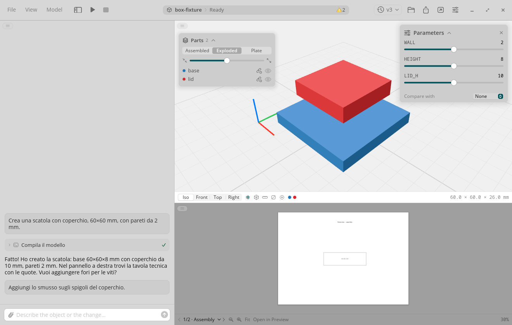
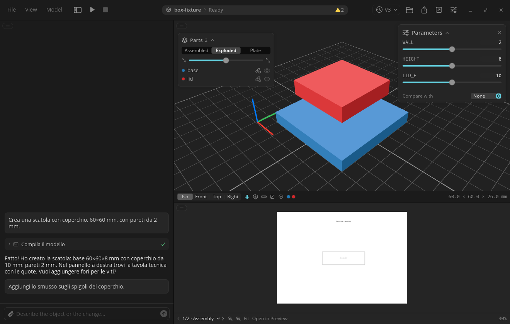
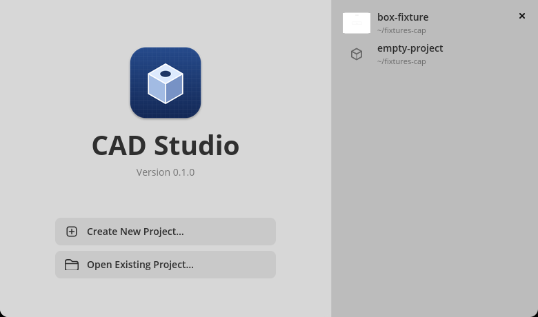

CAD Studio for COSMIC
Describe a part, get a printable model.
CAD Studio is a Rust port of cad-studio for the COSMIC desktop. You chat with your locally installed Claude Code or Codex. The agent writes a parametric build123d model.py. The app runs it, shows the result in 3D, shows the technical drawings, and hands the print plate to your slicer.


Features
- Chat with Claude Code or Codex. Progress, tool calls and thinking stream in as they happen. Prompts sent during a turn queue up.
- 3D viewer on the GPU: orbit, pan, zoom, view presets, measure, section cut, exploded parts, and a print-plate layout.
- Animation playback for models that ship an
animation.jsonstudy. - Parameter sliders. Moving one rewrites the value in
model.pyand rebuilds without the agent. - ISO technical drawings beside the model.
- Version history. Restore any version, or compare one against the current model.
- Attachments on prompts.
- ZIP export of the printable files, and open-in-slicer for the plate.
- Printer-aware rules: the printer type and model you set are passed to the agent.
- Follows the COSMIC theme: light or dark, accent color, fonts, corner radii and text scale.
- English, Italian, German and French.
Project folders use the same on-disk formats as the macOS app, so a project opens in either.
Requirements
- A COSMIC desktop session on Linux.
- A Rust toolchain, to build, and
just, to install. - Claude Code or Codex, installed and logged in (
claude, orcodex login). uvis recommended. The app uses it to create its build123d environment. Without it, the app falls back to a Python 3.10 to 3.13 interpreter withvenv./usr/bin/zip, for the ZIP export.
Install
Pick one. Release packages are on the Releases page.
- Debian, Ubuntu, Pop!_OS, Linux Mint. Download the
.deband runsudo apt install ./cad-studio-cosmic_<version>_amd64.deb. One package, built on Ubuntu 24.04, covers all of them. - Arch. Install
cad-studio-cosmic-binfrom the AUR (yay -S cad-studio-cosmic-bin). - Any other distribution. Download
CAD_Studio-<version>-x86_64.AppImage,chmod +xit and run it. It needs the system's Vulkan and Wayland/X11 libraries. - From source.
git clone https://github.com/prestonbrown/cad-studio-cosmic
cd cad-studio-cosmic
just install # build release, install into ~/.local
just uninstall # remove exactly what install laid downThe binary goes in ~/.local/bin. The desktop entry, metainfo and icons go under ~/.local/share. The app then appears in the COSMIC app grid.
First run
- A setup sheet asks for your printer type and model.
- The app looks for
claudeorcodex. If it finds neither, a sheet points you at Settings > Agent. - If the build123d environment is missing, the Python sheet installs it. This takes a minute or two the first time.
- The welcome window offers Create New Project and Open Existing Project.

Credit
This is a port of cad-studio by Filippo Finke, which is MIT licensed. His copyright is kept, with the port's copyright added. The design and the on-disk formats come from his app.
CAD Studio for COSMIC is MIT licensed too. It is not affiliated with Anthropic.